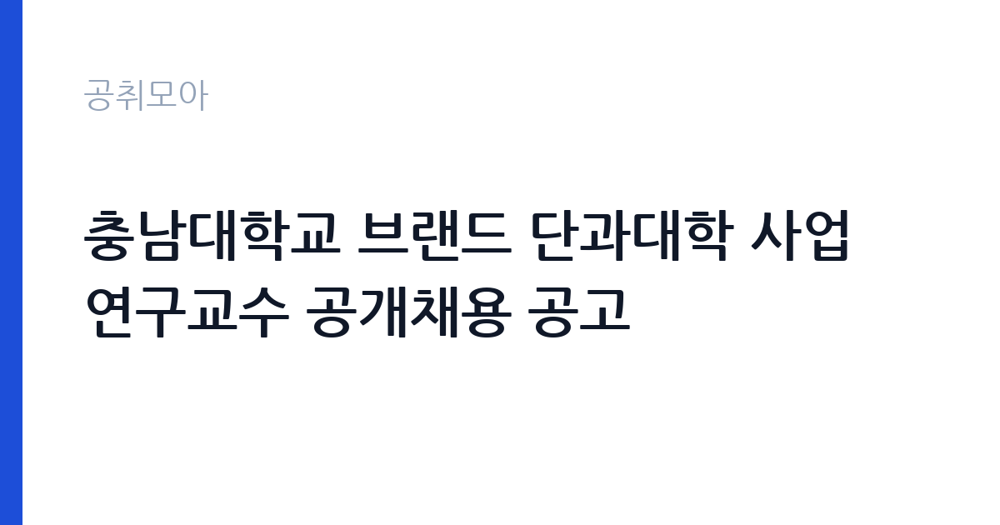

[국가기관] 충남대학교 브랜드 단과대학 사업 연구교수 공개채용 공고
충남대학교 · 대전 · 마감 2026-10-26 (D-8) · 출처 나라일터

한눈에 보는 모집 조건
| 기관 | 충남대학교 |
|---|---|
| 공고명 | 충남대학교 브랜드 단과대학 사업 연구교수 공개채용 공고 |
| 고용형태 | 정규직 |
| 근무지 | 대전 |
| 게시일 | 2026-10-19 |
| 마감일 | 2026-10-26 (D-8) |
지원자격, 이렇게 읽으세요
- 연구교수 2명
- 접수 ~2026-10-26 마감
- 세부 조건은 원문 공고문 확인
연구교수 지원 자격은 박사학위 소지자가 기본선입니다. 브랜드 단과대학 사업은 학과 단위의 특성화와 브랜드화를 목표로 하므로, 해당 분야 연구 실적과 교육과정 개발 경험이 서류에서 중요한 평가 요소가 됩니다. 사업 수행 인력이므로 연구계획서와 사업 참여 이력이 함께 제출되어야 하고, 임용 즉시 근무가 가능해야 합니다. 국가공무원법상 결격사유가 없어야 하며, 계약 기간과 재계약 조건은 공고문에 명시된 기간을 따릅니다. 전임 교원 임용과 달리 총장 임용 절차가 아닌 계약직 채용 절차로 진행된다는 점을 구분해서 봐야 합니다.
이 공고의 포인트
이 자리의 핵심은 연구와 사업 운영을 동시에 요구한다는 점입니다. 논문만으로는 부족하고, 교육과정을 설계하고 예산을 집행해본 경험이 있어야 합니다. 브랜드 단과대학 사업은 대학이 학과 경쟁력을 특성화해 브랜드를 만드는 사업이라, 기업·지자체와의 협력 과제를 끌어온 이력이 있으면 강한 차별점이 됩니다. 2명을 뽑는다는 점도 눈여겨볼 부분입니다. 한 명은 연구 기획, 다른 한 명은 사업 운영 쪽으로 역할이 갈릴 가능성이 있어, 본인의 강점이 어느 쪽인지 분명히 밝히는 전략이 통합니다.
전형은 어떻게 진행되나
전형은 서류심사와 면접심사로 진행됩니다. 서류에서는 연구 실적, 사업 수행 경력, 제출 연구계획의 구체성을 평가하고, 면접에서는 연구 역량과 사업 운영 능력, 조직 적합성을 확인합니다. 접수는 이메일(dydwns7578@cnu.ac.kr)로만 받고, 마감은 2026년 10월 26일 오후 3시입니다. 오후 3시 마감은 오전에 제출을 끝내야 한다는 뜻이므로 일정 관리에 주의해야 합니다. 제출서류 목록과 양식은 첨부된 공고문과 서식을 그대로 사용해야 하며, 임용 서류의 서명 누락은 감점 요인이 됩니다.
원문에서 확인한 전형 방식
○ 선발직급 : 연구교수 2명 ○ 고용형태 : 기간제 ○ 접수기간 : 2026. 10. 19.(월) ~ 10. 26.(월) 15:00 ○ 응시방법 : 이메일 접수(dydwns7578@cnu.ac.kr) ○ 문의처 : 충남대학교 대학혁신지원과 ☎ 042-821-6094
이런 분께 추천해요
- 박사학위와 함께 대학 사업 수행 경력이 있는 연구자
- 교육과정 개발이나 학과 특성화 사업을 기획해본 지원자
- 산학 협력 과제를 직접 수주하고 운영해본 경험이 있는 분
지원 전 체크리스트
- 박사학위 증명서와 연구 실적 목록을 준비했는가
- 사업 수행 경력이 드러나는 연구계획서를 작성했는가
- 마감이 10월 26일 오후 3시라는 점을 일정에 반영했는가
- 제출 서식과 파일명 규칙을 공고문대로 지켰는가
모집 일정과 제출 타이밍
접수 기간은 2026년 10월 19일부터 26일 오후 3시까지입니다. 서류심사 결과와 면접 일정은 개별 통보되며, 최종합격 후 임용 시점은 사업 일정에 맞춰 정해집니다. 계약 기간은 사업 기간과 연동되므로, 공고문에 적힌 계약 시작일과 종료일을 확인해야 합니다. 연구교수는 계약직이므로 재계약 여부가 사업 성과와 예산에 따라 결정된다는 점을 전제로 지원 계획을 세우는 편이 현실적입니다.
직무 이해하기: 국가기관
연구교수의 업무는 사업 연구와 운영 지원을 함께 포함합니다. 브랜드 단과대학 사업의 특성화 모델을 설계하고, 교육과정과 비교과 프로그램을 개발합니다. 사업 성과지표를 관리하고, 평가 보고서를 작성하는 일도 맡습니다. 학내 부서와 외부 기관 사이의 협의 창구 역할도 병행합니다. 연구직이라는 이름이 붙어 있지만 실제 비중은 사업 기획과 운영 지원이 크므로, 연구자로서의 정체성과 행정 실무 사이에서 균형을 잡을 수 있어야 합니다.
자기소개서 작성 팁
연구계획서는 사업의 목표와 본인의 연구를 연결하는 구조로 쓰세요. 브랜드 단과대학 사업이 왜 필요한지, 어떤 지표로 성과를 확인할지, 본인이 맡을 수 있는 부분이 무엇인지를 순서대로 배치하면 논리가 분명해집니다. 연구 실적은 나열하지 말고 대표 업적 두세 개를 골라 의미를 설명하세요. 사업 운영 경력은 예산 규모와 인원, 성과를 숫자로 제시하면 설득력이 올라갑니다. 지원동기에서는 충남대의 어떤 학문적 자산에 주목했는지 구체적으로 언급하는 편이 좋습니다.
면접 준비 포인트
면접에서는 연구계획의 실현 가능성을 집중적으로 확인합니다. 계획에 적은 일정과 성과지표를 실제로 어떻게 관리할 것인지 답할 수 있어야 합니다. 사업 예산이 줄어들거나 평가가 나쁠 때의 대응 방안을 묻는 질문도 나올 수 있습니다. 연구교수라는 신분의 계약 조건과 역할 범위를 이해하고 있는지도 확인 대상입니다. 답변은 연구 성과 자랑보다 사업 운영의 구체적 장면으로 채우는 것이 좋습니다. 마지막으로 타 부서와의 협업 경험을 사례로 정리해 두세요.
급여·근무조건 읽는 법
연구교수의 보수는 대학의 계약직 보수 기준과 경력, 사업 예산에 따라 결정됩니다. 이 공고문에는 보수 금액이 요약되어 있지 않으므로, 정확한 금액은 원문 공고문의 보수 항목이나 충남대학교 대학혁신지원과(042-821-6094)로 확인해야 합니다. 전임 교원의 호봉 체계와는 다른 계약직 기준이 적용되며, 4대보험과 퇴직급여는 관련 법령과 대학 규정에 따릅니다. 계약 기간이 사업 기간에 묶여 있다는 점이 보수 안정성과 직결되므로, 계약 시작일과 종료일, 재계약 조건을 반드시 확인하세요.
자주 묻는 질문
- 연구교수는 전임 교원인가요
아닙니다. 연구교수는 사업 수행을 위해 계약 기간을 정해 채용하는 비전임 연구직입니다. 이 공고의 고용형태도 기간제로 표시되어 있습니다. - 박사학위가 없으면 지원할 수 없나요
공고문의 응시자격에 학위 요건이 제시되어 있습니다. 세부 기준은 원문 공고문에서 확인해야 하며, 일반적으로 연구교수는 박사학위를 기본 요건으로 둡니다. - 접수 마감 시각이 특이한 이유는 무엇인가요
이번 공고는 2026년 10월 26일 오후 3시 마감으로 안내되어 있습니다. 오후 늦게 제출을 계획하면 접수가 무효가 될 수 있으니 오전 제출을 권합니다.
함께 보면 좋은 공고
[국가기관] 「충남대학교 AI인재양성부트캠프사업단」 전담직원(팀원) 공개 채용 공고 — 마감 2026-10-25[국가기관] 충남대학교 브랜드 단과대학 사업 기간제계약직(행정원) 공개채용 공고 — 마감 2026-10-26[국가기관] 충남대학교 AI거점대학 사업 산학협력중점교수 공개채용 공고 — 마감 2026-10-26출처: 나라일터 공개정보를 바탕으로 공취모아가 정리한 안내글입니다. 모집 조건·일정은 변경될 수 있으니 지원 전 반드시 원문 공고문을 확인하세요. 본 글은 정보 제공용이며 합격을 보장하지 않습니다.